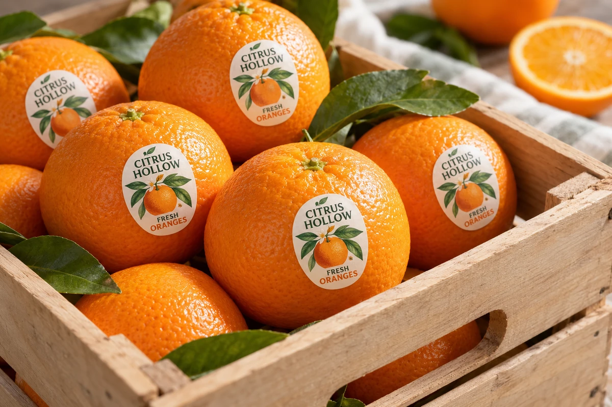

A produce-label order arrives with a fruit name, a brand logo and a request to add the usual number. The designer finds a similar orange sticker online, while the retailer expects a particular item and data arrangement. The small label now carries an unresolved product-identification decision.
Confirm the authorized produce data with the shipper and destination retailer before printing. Keep the commodity, variety, relevant size classification, production designation and identifier source traceable. A plausible-looking number or a familiar barcode graphic is not an approved data record.

Define the checkout job
Ask how the destination retailer identifies the loose produce: human entry of a PLU, a supported barcode or another agreed method. Obtain the actual requirement and its current reference. A sticker intended for one retail workflow should not automatically be supplied to every destination.
The IFPS explanation of PLU codes describes their role in identifying loose produce and notes that the scheme is voluntary. A particular retailer may still require an agreed implementation as a supply condition. Confirm that condition instead of describing every produce sticker as legally required to use a PLU.
Keep the loose consumer item separate from its case and pallet identification. The pack-level barcode guide discusses why different objects need the appropriate identities. A shipping-case code does not answer the cashier's loose-item lookup question.
Obtain the approved code from its authority
Use the applicable IFPS database and the responsible product owner to confirm the relevant classification. Record the exact source entry and any size or other qualification that matters. Do not choose a number because another brand used it on a superficially similar fruit.
Where a retailer-assigned PLU is proposed, obtain the retailer's arrangement in writing. IFPS's retailer-assigned-number guidance explains that these codes require specific arrangements and cannot simply be invented from unassigned numbers.
The printer can reproduce approved data, but should not silently become the authority selecting the commodity code. If information is incomplete, keep the data field pending and ask the responsible shipper or retailer to resolve it.
Build a produce-label data card
| Field | Evidence or approval to record |
|---|---|
| Product | Commodity, variety and relevant classification |
| Destination | Retailer/market and applicable implementation reference |
| PLU | Authorized code, source entry and any conditions |
| Retailer-assigned use | Written arrangement and covered destination |
| Barcode if required | Approved GTIN/data source and applicable symbol requirement |
| Human-readable text | Exact accepted product and identifier presentation |
| Artwork | Controlled file revision and final-size label dimensions |
| Release | Data owner, physical-output checks and remaining gaps |
The card is a procurement handoff tool. It does not allocate a PLU or GTIN, certify the produce or determine a universal label design. Keep the original authoritative records attached.
Separate the identifier from the symbol
A PLU is not interchangeable with a GTIN, and a barcode drawing is not the same thing as its encoded data. If the retailer requires a GS1 DataBar or another supported carrier, have its data and technical requirements confirmed by the responsible GS1 or retailer specialist.
IFPS provides fresh-produce implementation resources covering PLUs, GTIN assignment and barcode labeling. Use the relevant current guidance for the actual destination. Do not assume that adding a decorative QR square satisfies a retailer's point-of-sale requirement.
The packaging-code guide separates the scanning job from the graphic choice. On a small produce label, that distinction needs to be settled before the remaining space is assigned to branding.
Approve the data before checking final-size output
Give the designer a controlled data card rather than several reference photographs. Once the data is approved, review the artwork at actual size and on the intended produce surface or a relevant approved sample. Keep the product and identifier legible under the agreed use conditions.
If a barcode is included, perform the required data and physical-symbol checks. A readable PLU does not establish barcode quality, and one successful scan does not establish that the encoded product belongs to the shipment.
The illustration accompanying this article intentionally contains no production PLU or usable barcode. It shows a fictional brand and produce-label position, not a data record to copy into a retail order.
Keep production designations tied to evidence
Where a designation affects the identifier or wording, the responsible product owner must provide its authorized basis. Printing a particular number does not certify how the crop was produced. Do not let an artwork choice create an unsupported organic or origin claim.
Likewise, identification approval does not establish the label's material suitability on food. The food-contact documentation guide addresses the separate construction and intended-use evidence. Both decisions need appropriate owners.
For a hypothetical orange shipment, the data card may need a different retailer arrangement for one destination even when the same brand and label shape are used. Record that difference and allocate the correct artwork quantities before dispatch.
Check the destination allocation
If destinations use different retailer-assigned arrangements, list the approved artwork and required quantity for each destination before combining the order. Keep any shared brand graphics separate from the controlled identifier field. A correct code for one customer is still the wrong supply for another when its approved data arrangement differs. Confirm how the carton or inner pack distinguishes those versions.
Preserve the approval at reorder
Recheck the product classification, destination requirement and artwork revision when the variety, size category or retailer arrangement changes. Keep changes connected to the packing and shipment plan so old labels cannot be picked simply because their color looks right.
Send a produce-label data brief with the commodity, intended retailer/market, authorized identifier source, label size and required output method. Mark code allocation or retailer questions still awaiting approval. The form opens an email draft; review it and attach the controlled data card through email or the listed WhatsApp route.